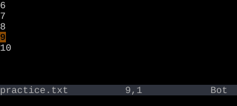

zz centers the cursor's line on screen. zt scrolls so the cursor's line is at the top. zb scrolls so the cursor's line is at the bottom.
After a search jump or function navigation, the cursor often ends up at the top or bottom edge of the visible window — too little context. Three commands fix that without moving the cursor: zz, zt, zb.
Center cursor's line on screen
Key
Note
z
z
Scroll cursor's line to top
Key
Note
z
t
Scroll cursor's line to bottom
Key
Note
z
b
zz — center the cursorzz revisitedzt — cursor to topzb — cursor to bottom
Reference
Key
Action
zz
Cursor's line → middle of screen
zt
Cursor's line → top of screen
zb
Cursor's line → bottom of screen
Worked example — zz
Bring the current line to the center.
Step 1 · Cursor near the bottom of the visible viewport.Step 2 · zz · zz — line moved to center, screen scrolled.

zt puts the line at the top; zb at the bottom. The cursor doesn't move in the buffer — only the viewport.